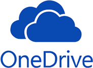

OneDrive

Microsoft OneDrive for Business is the online file storage application in the Office
Groups suite. All Vertex employees are provided with a OneDrive folder for their own
use. The personal OneDrive folder uses a cloud icon followed by OneDrive - Vertex,
Inc (). In addition to OneDrive folders for individual use, a OneDrive for Business folder
is created for each Office Group that is created. The corporate OneDrive folder uses
a building icon followed by Vertex, Inc ( ). Note that this is a different location than the individual employee folders. The
OneDrive for Business folder that is created with the Office Group is where the document
libraries for that group are housed and files in those libraries are stored. It is
not recommended that you synchronize a SharePoint folder with OneDrive. Synchronizing
may cause problems, such as files always opening as read-only.
). Note that this is a different location than the individual employee folders. The
OneDrive for Business folder that is created with the Office Group is where the document
libraries for that group are housed and files in those libraries are stored. It is
not recommended that you synchronize a SharePoint folder with OneDrive. Synchronizing
may cause problems, such as files always opening as read-only.
Synchronize with OneDrive for Business
Note: Synchronizing may cause problems, such as files always opening as read-only.
Complete the following to synchronize with OneDrive for Business:
-
In SharePoint, open the folder or list to synchronize.
-
In the menu bar, click Sync.
-
Click Sync now in the dialog box that opens.
-
(Optional) In the Open Microsoft OneDrive dialog box, click the Always open these types of links in the associated app check box.
-
Click Open Microsoft OneDrive.
-
Open File Explorer.
-
In the left navigation, locate Vertex, Inc. The synced folder should be a child of that folder.
Related topics